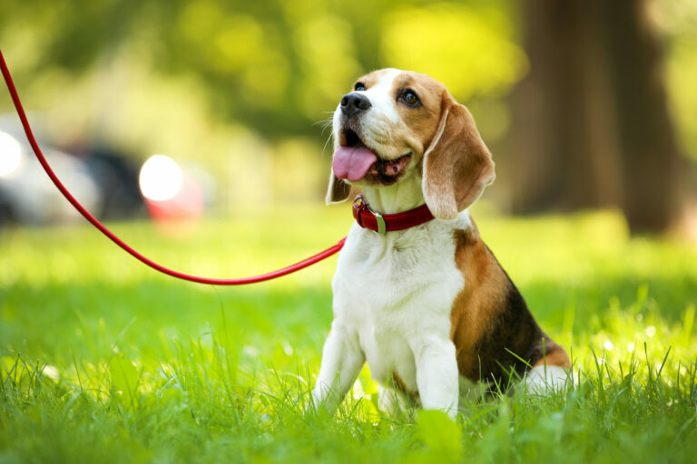
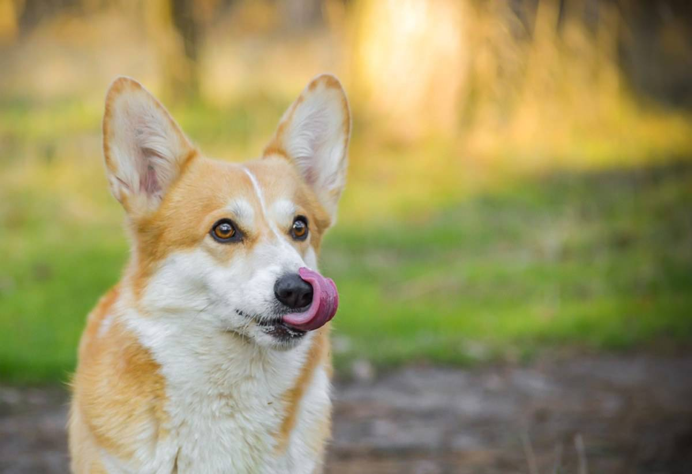

|
|
 |
| A continuación, te compartimos aquellas frutas que ponen en riesgo la salud de tu mascota:
Uvas y pasas
Aunque pueda parecer un alimento nutritivo y delicioso, la realidad es que estos frutos le generan daños renales
y hepáticos, por lo que el consumo prolongado podría causarle insuficiencia renal.
|
|
Frutas que sí pueden comer los perros
A diferencia de las anteriores, algunas otras frutas le podrán brindar sus nutrientes a tu perro sin ningún
problema, por lo que sólo debes tomar en cuenta que no es recomendable que coman grandes cantidades de frutos
debido a la cantidad de azúcar (fructosa) que contienen y, muy importante, deberás quitar las semillas o pepitas
de cualquier fruta que le ofrezcas.
Manzana: rica en vitamina C, calcio y ofrece propiedades antiinflamatorias. Ideal para prevenir problemas
estomacales.
Plátano: rica en fibra soluble, pero ésta debe proporcionarse en cantidades pequeñas y detener su consumo si
notas que a tu perro le provoca diarrea. |
|  |
|
 |
| ¿Cómo se pueden prevenir las garrapatas?
Existen dos alternativas para prevenir problemas de garrapatas:
Eliminar espacios de reproducción. En casa la limpieza e higiene de nuestros espacios es básica para evitar la
propagación de parásitos como las garrapatas, así como otros virus y bacterias. En particular, con las
garrapatas, los espacios verdes también deben estar bien controlados.
Utilizar accesorios de prevención. Algunos productos se consiguen fácilmente, como collares, pipetas o pastillas
para mantener a los parásitos fuera de tus mascotas; aunque otros son medicamentos que se consiguen únicamente
bajo receta y prescripción del médico veterinario.
La prevención es la medida más eficaz y recomendable para evitar que tu perro contraiga parásitos, toma tus
precauciones y disfruta de más años de salud y felicidad junto a tu gran amigo.
|
|
Los diferentes tipos de acciones en perro agresivos pueden incluir:
Agresión a extraños.
Agresión a los miembros de la familia.
Protección de recursos (como alimentos, golosinas o juguetes).
Agresión a otros perros en el hogar.
Agresión a perros desconocidos.
Si tu perro muestra signos de agresión, consulta a su veterinario para descartar algún problema de salud. |
 |
|
 |
| Mantenlo limpio.
Nadie quiere vivir con alguien que huele mal, lo mismo aplica a tu perro.
Bañaló cuando sea necesario, eso no significa que debas bañarle mucho, en especial los
cachorros que requieren menos baños que los humanos; más lavados no implican más felicidad para él.
La higiene de los perros no es tan exhaustiva como la nuestra.
|
|
El entrenamiento es de suma importancia para que tu perro y tú
tengan una convivencia óptima que los mantenga seguros en cualquier situación; tanto en un ambiente cerrado,
por ejemplo, una cocina, así como en un parque abierto y lleno de extraños. La obediencia inmediata a órdenes
como
"Quieto" y "Ven" puede mantener a tu amigo a salvo en caso de que se llegara a soltar de su correa o
a escapar mientras están en la calle, especialmente si esto sucede en una zona con mucho tráfico de autos o
a la vista de otros perros con los que pudiera comenzar una riña. |